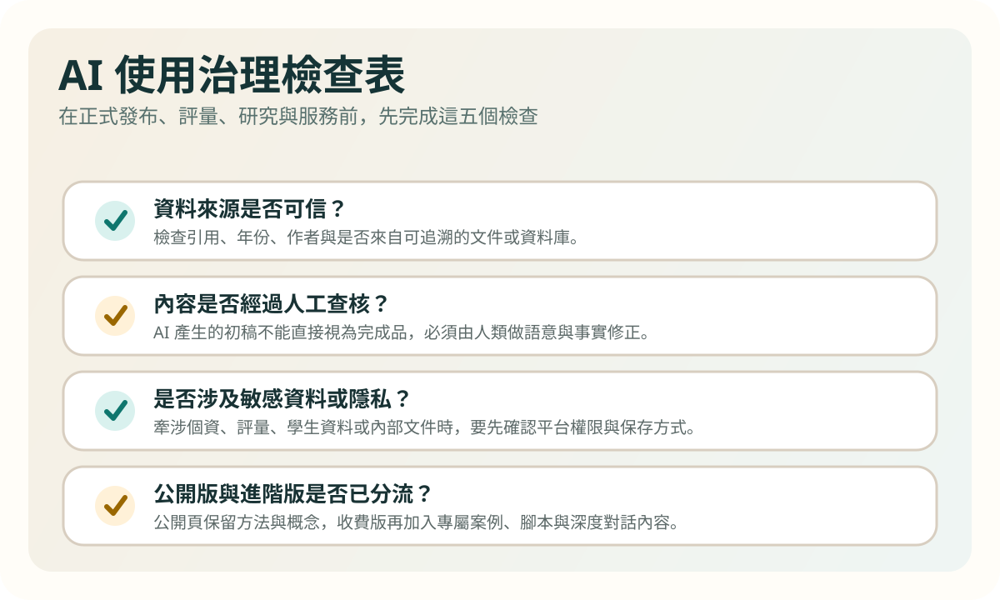
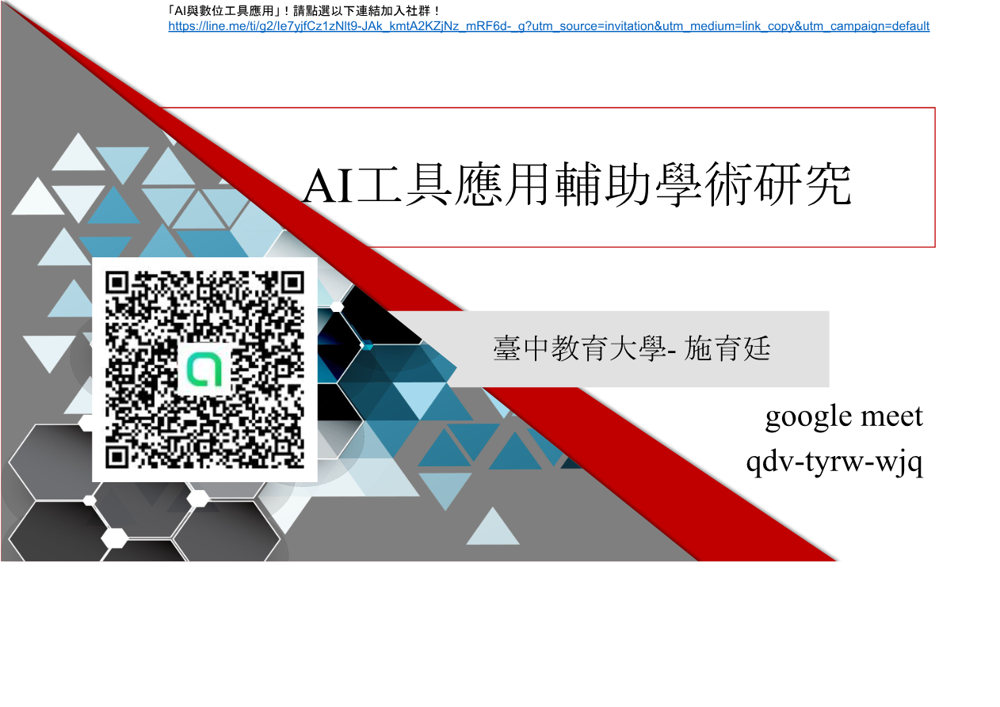

Learning goals
- Recognize risks involving accuracy, bias, privacy, and attribution.
- Build practical checking and disclosure habits.
- Understand the boundary between public, internal, and premium content.
Key ideas
The most common mistake is not failing to use AI, but trusting it too quickly. Formal writing, assessment, research, and sensitive data all require review and documentation.
This unit also supports content creators by clarifying what can be openly shared and what should remain in paid or internal materials.

Visual cases

This image helps frame governance in formal research and writing contexts where disclosure and verification matter most.

It also supports discussion of what belongs in public teaching materials, internal workflows, and premium content boundaries.
Activities
Activity 1: Risk inventory
List your most common AI tasks and identify accuracy, bias, privacy, and citation risks for each one.
Activity 2: Usage statement
Draft an AI use statement explaining the tool, the scope of human revision, and your checking method.
Task
Submit a personal AI use checklist covering verification, citation, sensitive data, public sharing, and paid-content boundaries.
Further viewing
Use the channel's videos on governance, research applications, and publishing boundaries to help translate verification, disclosure, and content-tier decisions into everyday practice.